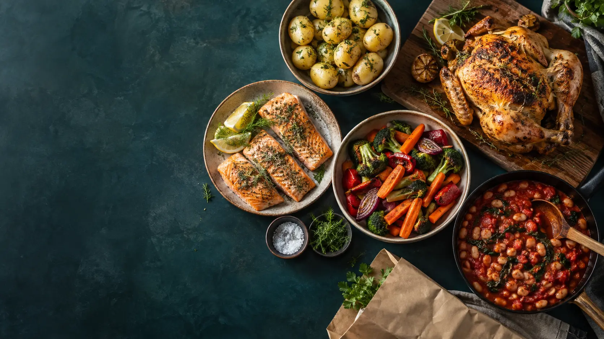

Ukens tilbud bestemmer menyen
God mat. Små priser.
Vi henter tilbudene først, finner gode råvarer til hyggelige priser og bygger middagsuka rundt dem. Hver middag og den samlede handlelisten skal ha minst 80 % av handlevarene på tilbud.

Handleområde: Fredrikstad, Sarpsborg og Mysen med nærområder. Hver avis kontrolleres mot butikkadressene i kilden. Bare aviser som gjelder lokale butikker brukes. Trykte tilbud som mangler i kildens data kan ikke garanteres.
Se dekning per tilbudsavis
Hva skal vi ha til middag?
Menyen begynner i tilbudsavisen
Først tilbud. Så retter som passer råvarene, smaken din og budsjettet.
Nye retter bygges fra de innsamlede tilbudene når utvalget trenger det. Økologisk må stå i kilden; vi velger det ved inntil 10 % prisforskjell og innenfor budsjettet. Budsjettet gjelder hele innkjøpet til middagene, også rester i pakningene.
Begynn med ukas gode kjøp
Hent alle tilgjengelige tilbud. Vi setter sammen retter etter råvarene og lager nye oppskrifter der det trengs.
Råvarene først
Tilbud i handleområdet
Fredrikstad, Sarpsborg og Mysen med nærområder, inkludert blant annet Rolvsøy, Kråkerøy, Borgenhaugen og Slitu.
Legg til et tilbud fra din butikk
Oppgi prisen for én pakning, datoene og riktig råvare. Tilbudet lagres bare i din profil. For bønner og kikerter: oppgi avrent vekt. Registrer bare tilbud som gjelder i Fredrikstad, Sarpsborg eller Mysen med nærområder.
Før du går i butikken
Ukas handleliste
Samlede mengder minus råvarene på kjøkkenet ditt. Kryss av det du har handlet.
Handleanslaget regner hele pakninger, også olje og krydder. Prisene uten tilbud er illustrerende anslag, ikke kontrollerte butikkpriser. Salt og pepper står i listen når oppskriften krever det. Registrer det du har hjemme for å trekke det fra. Vann regnes ikke som en handlevare.
Ta vare på de gode middagene
Kokeboka di
Lagre retter, gi stjerner og skriv ned dine egne små smaksgrep.
Uformelt og personlig
Din smak, din kokebok
Ingen e-post eller passord. En personlig lenke gir tilgang til kokeboka på en annen enhet.
Alle med din personlige lenke kan lese og endre profilen. Ikke bruk den til sensitive opplysninger.
Del app-lenken for at vennen skal lage sin egen profil. Den personlige lenken er bare for deg. Appen er åpen uten ChatGPT-innlogging.
Hva vil du prioritere?
Kjapt = inntil 30 minutter. Billig = rimelige råvarer. Næringsrikt = retter med belgvekster, egg, fisk eller kjøtt og flere råvaregrupper. Sunt = grønnsaksrikt. Lettere/slankende = retter med mye grønnsaker og mindre fet saus; ingen beregnede kalorier eller garanti for vektnedgang. Vegetar er et fast filter, de andre er prioriteringer.
Råvarer du liker — og helst slipper
«Liker ikke» utelukker oppskrifter med råvaren. Favoritter får et lite forsprang. Dette er ikke et allergifilter; kontroller ingredienser og pakninger selv.
Før du kjøper mer
Dette har jeg hjemme
Mengdene trekkes fra handlebehovet og påvirker middagsforslagene. Beholdningen oppdateres når du endrer den her, ikke automatisk når du lager mat.